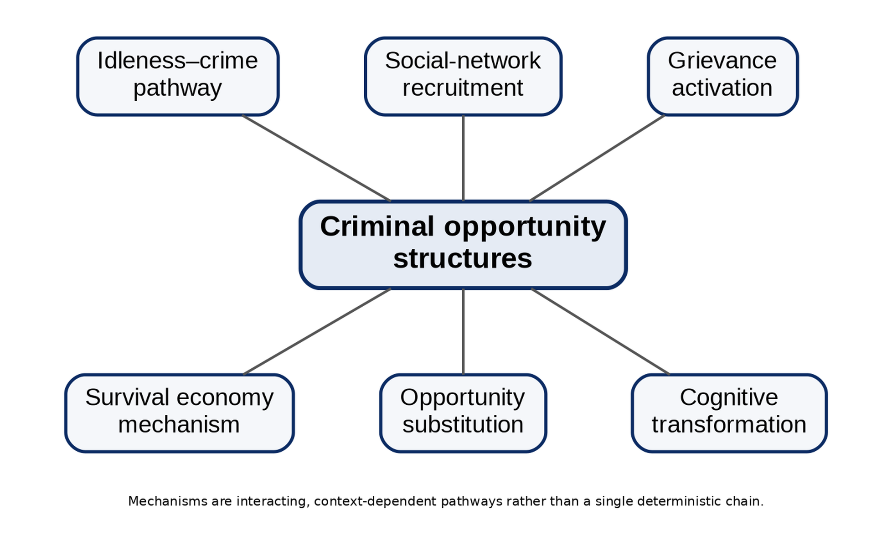

CHIATECH JOURNAL
SETEHEM · VOLUME 1 · ISSUE 1 · JULY 2026 · e018
PIONEER PUBLICATION · ACCEPTED ARTICLE · ORIGINAL RESEARCH ARTICLE · HUMANITIES & SOCIAL SCIENCES · CRIMINOLOGY · HUMAN SECURITY
Deconstructing the Mechanisms Linking Youth Unemployment to Criminality in Nigeria’s North-Central Region: A Grounded Theory Study
Dr. Iboro Tom IDIM
Department of Economics, University of Abuja, Abuja, Nigeria
Correspondence: ibotom5050@gmail.com
Article | Volume/Issue | Publication | ISSN | DOI |
|---|---|---|---|---|
e018 | 1(1) | Pioneer Issue · July 2026 | Pending assignment | Pending registration |
Abstract
Background: The unemployment–crime relationship is often reported as a correlation, but policy design depends on knowing the processes through which labour-market exclusion can become criminal involvement. Objective: This study identified and integrated the mechanisms through which unemployed youth may move toward criminal participation across Nigeria’s North-Central region. Methods: A constructivist grounded-theory design drew on a field corpus reported as 87 in-depth interviews, 14 focus-group discussions and documentary sources from Benue, Kogi, Kwara, Nasarawa, Niger, Plateau and the Federal Capital Territory. The archived sampling table explicitly classified 75 interviewees as unemployed youth, rehabilitated former offenders, community leaders and law-enforcement personnel; the remaining interview classifications were not disaggregated in that table. Analysis used open, focused, axial and theoretical coding, constant comparison, triangulation, member checking, reflexive memoing and an audit trail. Results: Six interacting pathways were identified: idleness and routine disruption; survival-economy pressure; social-network recruitment; grievance activation; cognitive transformation; and opportunity substitution. Social-network recruitment was especially prominent among former offenders, 73% of whom reported entry through existing social ties. The mechanisms varied by settlement type, livelihood structure and crime context, and were better understood as interacting configurations than as a single linear sequence. Conclusion: Youth unemployment should not be treated as an automatic cause of crime. The findings support a mechanism-specific prevention model in which livelihood restoration, structured engagement, network disruption, psychosocial and grievance-sensitive intervention, and credible legitimate opportunities are matched to the pathway observed in a locality.
Keywords: youth unemployment; criminality; grounded theory; crime mechanisms; social-network recruitment; human security; North-Central Nigeria; criminal opportunity structures
1. Introduction
Research on unemployment and crime frequently establishes association without showing the intervening processes that make the association intelligible. For prevention, this distinction is consequential. A labour-market shock that operates primarily through material deprivation calls for a different response from one operating through peer recruitment, grievance, routine disruption or a change in how a young person evaluates legitimate and illegitimate opportunities.
The North-Central zone provides a useful setting for process-oriented analysis because its states and the FCT combine agrarian livelihoods, rapidly growing towns, mineral economies, displacement, communal conflict and diverse forms of criminality. The study therefore asked not whether every unemployed young person becomes criminally involved, but how unemployment can alter routines, resources, networks, interpretations and choices under particular contextual conditions.
Mechanism-based explanation also places a necessary limit on causal language. The qualitative evidence can identify sequences that participants experienced and observers repeatedly described, but it does not estimate population-level causal effects. The contribution is therefore an empirically grounded process model that can be tested quantitatively in subsequent research.
1.1 Research questions and contribution
Which processes connect unemployment to criminal participation in the accounts of unemployed youth, rehabilitated former offenders, community leaders and law-enforcement personnel?
How do the identified mechanisms combine and vary across settlement, livelihood and crime contexts?
What intervention logic follows when unemployment-related criminality is treated as a set of heterogeneous pathways rather than a single effect?
2. Conceptual and Theoretical Orientation
Mechanism-centred social explanation focuses on recurrent processes that connect an initial condition to an outcome. In criminology, strain, routine activity, differential association/social learning and rational-choice traditions each specify a different link between blocked opportunity and offending. Rather than selecting one as universally sufficient, the present study treats them as sensitising traditions against which inductively generated categories can be compared.
Routine activity theory highlights the organisation of time, exposure and guardianship; strain approaches emphasise blocked goals, frustration and perceived injustice; social-learning perspectives draw attention to network exposure, modelling and reinforcement; and rational-choice perspectives examine the perceived returns and costs of legitimate and illegitimate options. The empirical task was to determine how these elements appeared in participants’ accounts and how they combined in local contexts.
3. Materials and Methods
3.1 Design and study area
A constructivist grounded-theory approach was used to develop an explanatory model from field accounts rather than impose a fixed causal structure in advance. Fieldwork covered Benue, Kogi, Kwara, Nasarawa, Niger and Plateau States and the Federal Capital Territory. Purposive locality selection sought variation in dominant crime patterns, urban–rural character, economic base and unemployment conditions.
3.2 Data sources and sampling
The source manuscript reports 87 in-depth interviews and 14 focus-group discussions. The interview table explicitly identifies 28 unemployed youth aged 15–35, 19 rehabilitated former offenders, 15 community leaders and 13 law-enforcement personnel (75 classified interviews). Because the archived table does not disaggregate the remaining 12 interview classifications, this article does not invent a fifth category. Interviews lasted approximately 45–120 minutes and were conducted in English, Hausa or Pidgin according to participant preference. Focus groups included unemployed youth, community members in high-crime areas and youth-association leaders. Documentary materials supplied contextual triangulation.
Evidence source | Documented scope | Analytical function |
|---|---|---|
In-depth interviews | 87 reported; 75 explicitly classified in archived table | Individual trajectories, recruitment, meanings and sequence |
Focus-group discussions | 14 groups | Shared norms, collective experience and community-level processes |
Documentary material | Local records, police data where accessible, NGO and news sources | Contextual triangulation rather than substitution for testimony |
Table 1. Empirical corpus and evidential function.
3.3 Analysis, trustworthiness and ethics
Transcripts were subjected to open coding, focused coding, axial coding and theoretical integration. Constant comparison was used across participants and settings. Trustworthiness procedures reported in the source study included prolonged engagement over ten months, triangulation, member checking, an audit trail and reflexive journalling. Ethical approval was reported as having been obtained from the Nasarawa State University Research Ethics Committee; participation was based on informed consent, identifying information was anonymised, and former offenders were approached with additional attention to retraumatisation risk.
3.4 Interpretive boundary
The study is qualitative and mechanism-generating. Frequencies such as the 73% network-recruitment figure are descriptive of the interviewed former-offender subgroup and are not prevalence estimates for all offenders or unemployed youth in North-Central Nigeria.
4. Findings

Figure 1. Six interacting unemployment–criminality pathways synthesised from the grounded-theory analysis.
Mechanism | Core process | Typical intervention implication |
|---|---|---|
Idleness–crime pathway | Loss of routine and accumulation of unstructured, weakly supervised time | Structured work, apprenticeship, supervised youth activity and routine restoration |
Survival economy | Material deprivation makes acquisitive or income-generating crime appear necessary | Immediate livelihood protection, income support and rapid employment pathways |
Social-network recruitment | Trusted peers or relatives provide access, modelling, skills and normalisation | Network-aware outreach, credible mentors, exit support and disruption of recruitment channels |
Grievance activation | Perceived injustice and exclusion convert economic frustration into resentment and retaliatory motivation | Procedural fairness, grievance redress, civic inclusion and conflict-sensitive communication |
Cognitive transformation | Prolonged exclusion erodes identity, future orientation and moral constraints | Psychosocial support, counselling, future planning, education and identity-restoring roles |
Opportunity substitution | Illegal activity is judged to offer higher or more certain returns than available legal work | Raise returns to legitimate work while increasing certainty of lawful deterrence and reducing illicit market access |
Table 2. Mechanisms, process logic and intervention implications.
4.1 Social-network recruitment as a salient pathway
The most clearly quantified mechanism in the source material was social-network recruitment: 73% of the 19 rehabilitated former offenders reported recruitment through existing social relationships. Participants described entry as incremental—initial observation or low-risk assistance followed by greater participation—rather than as an abrupt decision to join a criminal group. The finding is consistent with the idea that trusted ties lower perceived risk, provide techniques and rationalisations, and create obligations that make exit more difficult.
4.2 Interaction among mechanisms
The six mechanisms were not mutually exclusive. Unstructured time increased exposure to recruiting networks; material deprivation intensified the attractiveness of opportunity substitution; persistent exclusion could generate grievance; and prolonged uncertainty could narrow future horizons. The resulting 'criminal opportunity structure' is therefore best understood as a configuration of economic exclusion, social access and situational opportunity, not as unemployment alone.
4.3 Contextual variation
The source analysis reports that idleness was more visible in semi-urban settings with concentrations of jobless youth, while survival-economy pressures were more prominent in rural communities affected by livelihood collapse. Network recruitment was particularly important for organised criminal activity. These contrasts support local diagnosis before intervention: the same employment programme may have different effects where the dominant pathway is hunger, network recruitment, grievance or perceived returns from crime.
5. Discussion
The findings help reconcile several criminological traditions by showing how their mechanisms can operate sequentially or simultaneously. Routine disruption explains exposure and time use; strain and grievance explain emotional and interpretive responses to blocked opportunity; social learning explains the role of trusted networks; and rational choice explains the comparison of returns once criminal opportunities become available. The value of the grounded model is not that it replaces these theories, but that it shows how their elements can coexist in a single trajectory.
The study also cautions against deterministic employment narratives. Most unemployed youth do not offend, and unemployment by itself does not explain who encounters a recruiter, who experiences acute survival pressure, who interprets exclusion as injustice, or who has access to profitable illegal opportunities. Protective family ties, religious or community institutions, education, mobility, credible employment prospects and effective policing may interrupt the sequence at different points.
Policy should therefore move from generic job creation to mechanism-sensitive prevention. Employment remains central, but its design should be coupled with rapid livelihood support in crisis-affected communities, network-aware prevention for organised crime, psychosocial and identity support after prolonged exclusion, and credible legal-economic opportunities that outperform illicit alternatives.
6. Limitations
The study relies on retrospective and sensitive accounts, excludes active offenders, and could not access the most dangerous localities. Its qualitative design supports analytical transfer rather than statistical generalisation. The archived interview-category table also does not fully disaggregate all 87 reported interviews; this article preserves that limitation rather than reconstructing missing categories. Future work should test the six-mechanism model prospectively with larger samples, network measures, longitudinal employment histories and geographically linked crime data.
7. Conclusion
Youth unemployment is best understood as a risk condition whose consequences depend on the processes it activates. In the North-Central accounts analysed here, criminal involvement emerged through interacting pathways of disrupted routine, survival pressure, trusted recruitment, grievance, cognitive change and opportunity substitution. Prevention is therefore strongest when it is both economic and social: restoring livelihoods, structuring time, interrupting recruitment, strengthening legitimate networks, addressing grievance and ensuring that lawful opportunities are credible. This mechanism-specific approach provides a more defensible basis for intervention than the assumption that unemployment has one uniform effect on crime.
Declarations
Declaration | Statement |
|---|---|
Ethics and consent | The source study reports approval by the Nasarawa State University Research Ethics Committee, informed consent, anonymisation, and additional safeguards for interviews with rehabilitated former offenders. |
Funding | No external grant funding is declared in the supplied manuscript. |
Competing interests | The author declares no competing interests in relation to this article. |
Data availability | Interview and focus-group materials are not publicly reproduced because they contain sensitive narratives. De-identified analytic materials may be considered by the author subject to ethics and confidentiality obligations. |
AI-assisted tools | AI-assisted editorial tools may be used for language, formatting and consistency checks under human author/editor control. No AI system is listed as an author, and the author remains accountable for claims, sources and interpretations. |
Related version | This article was developed from the author's longer study manuscript on youth unemployment and criminality in North-Central Nigeria; the present article is the journal-formatted version of that work. |
References
Agnew, R. (1992). Foundation for a general strain theory of crime and delinquency. Criminology, 30(1), 47–87.
Charmaz, K. (2014). Constructing grounded theory (2nd ed.). SAGE.
Cloward, R. A., & Ohlin, L. E. (1960). Delinquency and opportunity: A theory of delinquent gangs. Free Press.
Cohen, L. E., & Felson, M. (1979). Social change and crime rate trends: A routine activity approach. American Sociological Review, 44(4), 588–608.
Hedström, P., & Ylikoski, P. (2010). Causal mechanisms in the social sciences. Annual Review of Sociology, 36, 49–67.
International Labour Organization. (2023). ILO youth country briefs: Nigeria. ILO.
Merton, R. K. (1938). Social structure and anomie. American Sociological Review, 3(5), 672–682.
National Bureau of Statistics. (2023). Nigeria Labour Force Survey: Q4 2022 & Q1 2023—press release and revised methodology. Abuja, Nigeria.
World Bank. (2024). Nigeria Development Update: Staying the course—progress amid pressing challenges. World Bank.
Suggested citation: Idim, I. T. (2026). Deconstructing the mechanisms linking youth unemployment to criminality in Nigeria’s North-Central Region: A grounded theory study. CHIATECH JOURNAL, 1(1), e018. DOI pending registration.
© 2026 Iboro Tom IDIM. Author retains copyright. Published by CHIA TECH SOLUTIONS AND RESOURCES LIMITED under CC BY 4.0.